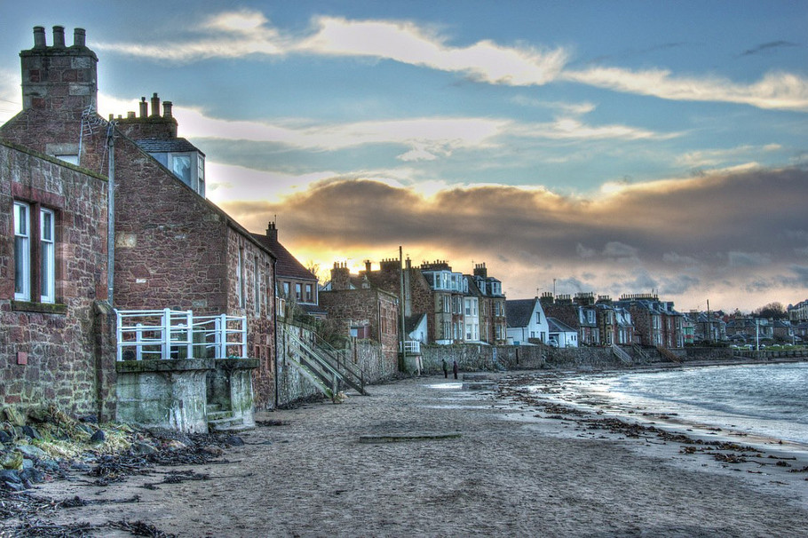
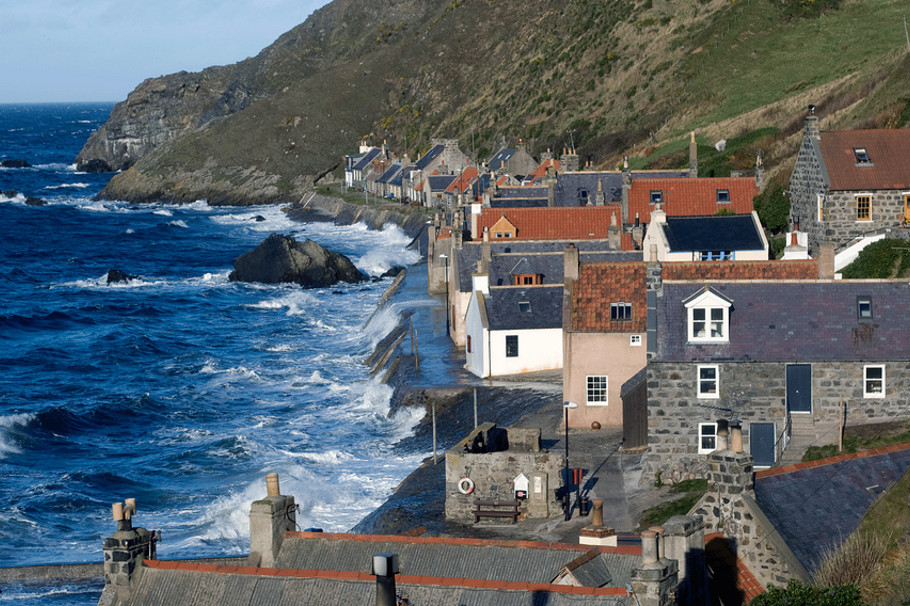

Nestled along the rugged northern coastline, the small town of Brighouse Bay is a picturesque seaside community known for its breathtaking natural scenery. The town is situated on a sheltered bay dotted with fishing boats bobbing gently in the harbor. Picturesque green hills slope down to meet the rocky coastline and the deep blue waters of the North Sea. On a sunny day, you can admire the sparkling waves and admire the small offshore islands rising from the sea.

The town itself has a quaint charm with its old stone buildings, local pubs, cute cafes and little shops selling local crafts, woolens, and seafood. The high street runs parallel to the harbor and is lined with independent businesses, many specializing in fresh fish and chips. Locals tend their boats in the early morning and sell their catch dockside later in the day. The smell of saltwater permeates the crisp sea air.

Visitors enjoy meandering along the scenic coastal paths near Brighouse Bay, which afford splendid views over the sea. Puffins and razorbills nest along the rocky outcrops during summer months while grey seals can often be spotted bobbing just offshore. There are also remnants of old castles and watchtowers dotting the landscape, hinting at the area's strategic medieval past for spotting incoming invaders by sea.
With its rich maritime history, charming surroundings and access to rugged natural beauty, Brighouse Bay encapsulates the memorable seaside experience of coastal Scotland. It's the type of scenic town where visitors daydream about one day retiring to or owning a cozy cottage to escape hustle and bustle of city life..